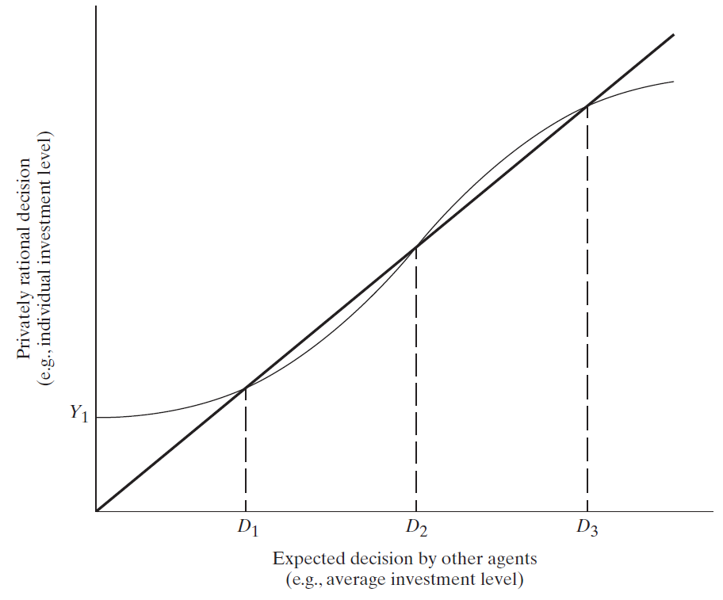

How Can There Be More Than One?
Basically, reflects a more (but not entirely) realistic possibility of outcomes
We will be matching expectations to reality
Recall that expectations are not necessarily reality but they do inform it
Multiple Equilibria is the condition where more than one equilibria exists
These equilibria may sometimes be ranked, in the sense that one is preferred to another
The standard diagram takes an S-shape around a 45 degree line

Multiple Equilibria
Components of the S-Diagram
Wavy Line Private Decision Function
- Tells us the best decision an individual can make given decisions of all other agents
45 Degree Line
- Shows all points where an individual’s decision is exactly the same as the expected decision of all other agents
Multiple Equilibria
Finding the Equilibria
- We identify where the private decision function is the same as the 45 degree line
- These points are where it is privately optimal to do what other agents are doing
- No agent has an incentive to deviate
- But there is stability to consider as well
Stable vs Unstable Equilibria
Stable Equilibria
- An equilibrium is stable if it is the case that if we were to move away from it, then agents will eventually end back at that equilibrium
Unstable Equilibria
- An equilibrium is unstable if it is the case that if we were to move away from it, then agents will take actions that make it move further away from it
How can we tell if an equilibrium is stable/unstable?
If the S-Curve is flatter than the 45-Degree line than it is stable
If the S-Curve is steeper than the 45-Degree line than it is unstable
In this previous example, \(D_{1}\) and \(D_{3}\) are stable
And \(D_{2}\) is unstable
Big Push
This model helps us understand something like perpetual poverty or the middle income trap
Take for example a nation with a low average investment
- If nothing is done, investment will simply return to \(D_{1}\) and there will be less and less economic activity
- Recall what our previous models infer about low investments low output
- If investment could be increased beyond the intermediate point \(D_{2}\), then these models predict that investment would eventually end up at \(D_{3}\)
Examples of a Big Push
Intestinal works are prevalent among children in the poorest of developing countries
- Worms lead to sickness
- Sickness means missed school or missed work
- Worms spread from children to children in several ways
- Coordination Failure: If no one treats their child (or if they are unable to), why should I treat mine?
- Studies have shown that deworming medicine leads to a large increase in school attendance in Kenya, even among untreated children
Multiple Equilibria Problems
There are several other problems with multiple equilibria to consider
1. Firm Incumbency
2. Behaviour and Norms
3. Linkages
Multiple Equilibria Problems
1. Firm Incumbency
- Existing firms have an advantage over new firms
- This may be true even if they have relatively worse technology
- Take the entry of a modern firm, with better technology
- Even if the new firm has better tech, they run up against an economies of scale problem
- The local firm produces more output, so their per-unit cost is lower
- A new firm cannot just match production yet, even though they may produce output more efficiently
- Older firms can adjust and obtain the more efficient tech, but can they?
- If capital markets are poor, then they cannot invest properly and the economy is stuck with the inefficient production
2. Behaviour and Norms
3. Linkages
Multiple Equilibria
1. Firm Incumbency
2. Behaviour and Norms
Movement to a better equilibrium can be especially difficult when there are many agents to consider
Some agents may have different and selfish incentives that make them act in corrupt ways
Imagine how difficult it is to change someones mind from say corruption to a cooperative nature where working together benefits all
3. Inequality
Multiple Equilibria Problems
1. Firm Incumbency
2. Behaviour and Norms
3. Linkages
- A traditional view has been that some inequality may enhance growth because the savings of the rich are higher than those of the poor
But in reality the poor save more than we think, or at the very least they do when we consider savings as investments in things like health, children’s education, and home improvements
Even more importantly, in high inequality settings, the poor may not be able to get loans due to their lack of wealth
- With lack of access to credit, they may not be able to get loans that finance productivity increasing investments (efficient capital, educational investment, etc.)